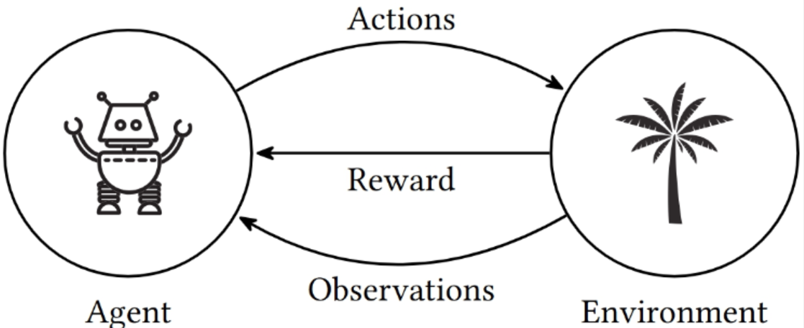

Aprender agindo
Sem professor e sem rótulos: um agente, um ambiente e um único número.
Uma criança brincando não tem professor
E, mesmo assim, aprende- Explorar produz informação sobre causa e efeito.
- As consequências dos próprios atos são o material de estudo.
- Aprende-se o que fazer para alcançar objetivos.
- Ninguém entrega uma tabela de pares (situação, ação correta).
Como transformar isso em algoritmo? Do que precisamos, além das observações do ambiente?
Falta um sinal

A recompensa é um escalar: um único número por passo de tempo. Todo o "o que queremos" precisa caber ali.
Nem supervisionado, nem não supervisionado
Um terceiro paradigma| Supervisionado | Não superv. | Por reforço | |
|---|---|---|---|
| Dado | pares (entrada, rótulo) | entradas sem rótulo | experiência do próprio agente |
| Sinal | a resposta correta | nenhum | avaliação da ação tomada |
| Objetivo | generalizar o rótulo | achar estrutura | maximizar recompensa |
| Dados | fixos, i.i.d. | fixos | mudam com a política |
| Tempo | irrelevante | irrelevante | é do problema |
A diferença que mais dói
Diz qual era a ação certa — independentemente do que você fez. É o aprendizado supervisionado.
Diz apenas quão boa foi a ação tomada. Nada sobre as que você não tomou. É o RL.
Cada melhoria de política muda os estados visitados — e portanto muda os dados de treino. O alvo se move enquanto se aprende.
RL is the third camp and lies somewhere in between full supervision and a complete lack of predefined labels. On the one hand, it uses many well-established methods of supervised learning, such as deep neural networks for function approximation, stochastic gradient descent, and backpropagation, to learn data representation. On the other hand, it usually applies them in a different way. Lapan, Deep Reinforcement Learning Hands-on, cap. 1
O laço, com notação
Tudo em RL acontece dentro desta sequênciaA recompensa que resulta de At é Rt+1, e não Rt.
Por que t+1?
O índice marca quando o número chegou ao agente, junto com St+1 — ambos vêm do ambiente no mesmo instante. Parte da literatura mais antiga usa Rt; nós seguimos o Sutton & Barto (2018).
Os três conjuntos
- St ∈ 𝒮 — os estados possíveis.
- At ∈ 𝒜(s) — as ações disponíveis naquele estado.
- Rt ∈ ℝ — um escalar.
Em controle: x ≡ s e u ≡ a. Usamos s, a, r para ficar colado ao livro-texto.
Onde fica a fronteira entre agente e ambiente?
Tudo o que o agente não controla arbitrariamente faz parte do ambiente. Não é a fronteira física.
- Motores, bateria e o corpo do robô: ambiente.
- O agente é apenas o processo de decisão.
Conhecer a dinâmica ≠ saber agir. Eu sei as regras do cubo mágico e continuo sem saber resolvê-lo.
Veja o laço rodando
O agente que anda ao acaso não é "menos inteligente" — ele apenas ainda não tem nenhuma estimativa de valor para se guiar.
A política é o objeto que procuramos
Aprender = melhorar o mapa que leva situações em ações- Tabela, regra, rede neural — qualquer coisa que responda "o que eu faço aqui?".
- A estocástica é a forma geral; a determinística é caso particular.
Toda a definição de objetivo cabe num escalar?
Todo objetivo pode ser bem representado como a maximização do valor esperado da soma acumulada de um sinal escalar de recompensa.
- É uma hipótese, não um teorema.
- Aceitá-la é o que define o campo.
- É a primeira coisa a questionar quando um projeto de RL dá errado.
A recompensa diz o que você quer, nunca como conseguir.
- Premiar "encostar no lixo" → robô que esbarra no mesmo detrito.
- Premiar capturar peças → agente de xadrez guloso que perde a partida.
Conhecimento sobre como agir entra pela política ou pelo valor inicial — não pela recompensa.
A recompensa é aleatória, no caso geral
Escrever r(s,a) como função determinística é um caso particular. No caso geral o ambiente sorteia Rt+1 e St+1 a partir de St e At. A aula 03 formaliza isso como p(s′,r | s,a).
Recompensa é imediata. Valor é a longo prazo.
A distinção mais importante da aulaMaximizamos não Rt+1, mas o retorno:
- γ = 0 → míope: só o próximo passo.
- γ → 1 → previdente: o distante pesa quase como o imediato.
- γ < 1 garante que a soma converge em tarefas sem fim.
Tarefa episódica × contínua
Se a interação se quebra em episódios (uma partida, uma tentativa de pouso), a soma é finita e γ = 1 é permitido. Se a tarefa é contínua (controlar uma planta para sempre), γ < 1 é necessário para que Gt seja um número.
As funções de valor
vπ(s) = 𝔼π[ Gt | St = s ] — retorno esperado a partir de s, seguindo π.
qπ(s,a) = 𝔼π[ Gt | St = s, At = a ] — o mesmo, fixando a primeira ação.
Não embaralhe os dois
| vem de | horizonte | é aprendido? | |
|---|---|---|---|
| r, R | ambiente | imediato | não |
| v, q | agente (estima) | futuro esperado | sim |
Escrever v(s,a): v é do estado, q é do par.
Rewards are in a sense primary, whereas values, as predictions of rewards, are secondary. Without rewards there could be no values, and the only purpose of estimating values is to achieve more reward. Nevertheless, it is values with which we are most concerned when making and evaluating decisions. Sutton & Barto, § 1.3
Uma escolha em que a recompensa mente
A recompensa imediata da esquerda é maior — sempre. Quem decide pelo valor muda de ideia dependendo de γ.
Prêmio grande = 10, a 3 passos, recompensa 0 no caminho. Em que γ as duas opções empatam? E se o prêmio estiver mais longe?
Esquerda: G = 1. Direita: G = γ²·10.
Empate: γ²·10 = 1 ⟹ γ = 1/√10 ≈ 0,316.
Com o prêmio a n passos, o empate ocorre em γ = 10−1/(n−1): quanto mais longe, mais perto de 1 γ precisa estar.
O dilema que só existe em RL
Repetir o que funcionou × testar o que nunca se fezA ação de maior estimativa de valor. Maximiza a recompensa agora.
Outra ação, para melhorar as estimativas. Custa agora, paga depois.
- Feedback avaliativo: a única forma de saber o valor de uma ação é executá-la.
- Ambiente ruidoso: uma tentativa não basta, é preciso repetição.
Lá o rótulo correto vem de graça para toda entrada, inclusive para as decisões que o modelo não tomou.
Aqui, quem não experimenta não fica sabendo — e pode passar a vida convencido de que a segunda melhor ação é a melhor.
Quanto custa não explorar
A montagem do experimento
Dez ações, cada uma com um valor verdadeiro q*(a) ~ N(0,1) desconhecido; a recompensa recebida é ruidosa. A política ε-gulosa explora com probabilidade ε. É, essencialmente, a Figura 2.2 do Sutton & Barto — e o assunto inteiro da aula 02.
O que a figura ensina
- ε = 0 sobe rápido e estaciona: trava na primeira ação que pareceu boa.
- ε = 0,1 aprende rápido, mas paga pedágio para sempre — explora 10% das vezes mesmo já sabendo a resposta.
- ε = 0,01 demora e, no longo prazo, passa à frente.
Não existe ε ótimo universal. Existe ε adequado ao horizonte.
Quatro elementos — e um deles é opcional
Além do agente e do ambienteComo o agente se comporta: mapa dos estados percebidos para as ações. É o núcleo do agente.
Define o objetivo. O agente não pode alterá-lo — só pode mudar as ações e, por meio delas, os números que recebe.
O que é bom a longo prazo: quanto de recompensa se pode esperar acumular a partir dali.
Imita o ambiente e permite inferir a reação antes de agir. Com modelo dá para planejar; sem modelo, resta tentativa e erro.
Com modelo ou sem modelo
| Model-free | Model-based | |
|---|---|---|
| Como decide | tentativa e erro, pela experiência | simula à frente e escolhe |
| Precisa de | muitas interações reais | um modelo, dado ou aprendido |
| Risco | caro no mundo físico | o modelo estar errado |
| Exemplos | Q-learning, SARSA, DQN, PPO | prog. dinâmica, Dyna, MCTS |
Modelo detalhado × cheap simulation
Um modelo grosseiro e barato, rodado milhões de vezes, costuma valer mais do que um modelo fiel e caro — é a aposta de simuladores como MuJoCo e Isaac: trocar precisão por volume de experiência. O preço é o reality gap: a política aprendida na simulação pode não sobreviver ao mundo real.
Métodos evolutivos geram políticas inteiras, medem o desempenho de cada uma e mantêm as melhores.
- Não usam quais estados foram visitados.
- Não usam quais ações foram escolhidas dentro da partida.
- Jogam fora exatamente a informação que as funções de valor aproveitam.
Um exemplo completo: jogo da velha
O § 1.5 do Sutton & Barto, rodando ao vivo- Oponente imperfeito, que às vezes erra.
- Não queremos empatar sempre: queremos explorar as falhas dele.
- Minimax não serve: assume adversário perfeito e joga para o empate.
- Programação dinâmica serviria, mas exige o modelo do oponente.
A montagem
- Estado: o tabuleiro depois da nossa jogada (afterstate).
- Tabela: um V(s) por estado — a probabilidade estimada de vencer.
- Terminais: 1 vitória · 0,5 empate · 0 derrota. Todo o resto começa em 0,5.
- Política: quase sempre gulosa; às vezes, uma jogada exploratória.
Por que 0,5 no empate, se o livro usa 0?
O livro trata empate como derrota: contra um adversário fraco, empatar é fracassar. Aqui separamos os dois para que a demo continue tendo o que ensinar quando você subir a perícia do oponente — contra jogo perfeito, empatar é o melhor resultado possível, e com a codificação do livro o agente não distinguiria empate de derrota.
Repare: mudar um número na tabela de valores terminais muda o problema, não o algoritmo.
A regra de aprendizado
- A diferença entre colchetes é o erro de diferença temporal.
- Não se espera o fim da partida: cada jogada corrige a anterior.
- É o método da aula 05, apresentado aqui de graça.
Treine o agente na sua frente
A perícia é a probabilidade de o oponente jogar de forma ótima (minimax); no resto das vezes ele joga ao acaso.
O que ele descobriu sozinho
- Cada célula é V do tabuleiro com o primeiro X ali.
- Nenhuma dica sobre centro, quinas ou laterais foi dada.
- Células paradas em 0,50: nunca experimentadas.
Experimentos para fazer em aula
- ε = 0 — a taxa de vitória até sobe, mas oito das nove aberturas ficam em 0,50. Ele joga bem uma linha só.
- Aprender com exploratórias — as derrotas sobem: passa a estimar o valor de uma política que inclui as jogadas aleatórias.
- Perícia 100% — vitórias vão a zero, empates dominam, e todas as aberturas convergem para 0,50.
Por que cada um desses efeitos acontece
ε = 0: some o pedágio das jogadas aleatórias, mas o agente nunca descobre o que não tentou. É a ignorância que a exploração compra.
Exploratórias: o agente passa a estimar o valor da política que ele executa, e não da política gulosa que pretende seguir. É a distinção on-policy × off-policy, que volta na aula 05.
Perícia 100%: contra jogo perfeito, empatar é o melhor resultado possível — e todas as aberturas empatam, por isso valem 0,50.
O que este exemplo pequeno já contém
- Interação: aprende jogando.
- Objetivo claro: vencer.
- Consequências atrasadas.
- Sem modelo do oponente.
- Melhora enquanto joga: sem fase de treino separada.
São 39 = 19 683 configurações — cabem numa tabela. O gamão tem 1020; o Go, 10170. A partir da aula 08 a função de valor precisa virar função aproximada.
O que torna isto difícil
Cada item aqui vira uma aula mais adianteA teoria supõe que St resume o passado (propriedade de Markov). Na prática chega uma observação parcial.
A recompensa chega tarde e sem etiqueta: qual das 200 ações foi a responsável?
Dezenas de milhões de quadros para um Atari que um humano entende em minutos. No mundo físico, cada amostra custa tempo e desgaste.
Tabelas acabam. Com aproximação ganhamos generalização e perdemos as garantias de convergência do caso tabular.
Especificar a recompensa. O agente otimiza exatamente o que você escreveu — inclusive os atalhos que você não previu.
- Premiado por "andar para a frente" → aprende a cair para a frente.
- Premiado por pontuação num jogo de barco → gira em círculo coletando itens e nunca termina a corrida.
O fenômeno tem nome: reward hacking.
Três fios que se encontraram nos anos 1980
Por que a notação parece meio psicologia, meio teoria de controlePsicologia animal. Lei do efeito (Thorndike, 1911); Minsky (SNARC, 1951); Klopf (1972).
Bellman (1957): programação dinâmica e MDPs. Howard (1960): iteração de política. Daqui vêm v e q.
Aprender de uma previsão para a próxima. Samuel (1959) nas damas; Sutton (1988) formaliza o TD.
Watkins amarra os fios 2 e 3 com o Q-learning: controle ótimo aprendido por diferenças temporais, sem modelo. É o algoritmo que a maior parte desta disciplina persegue.
Marcos
Síntese
O vocabulário que vale para a disciplina inteira| Símbolo | Nome | Quem produz | O que é |
|---|---|---|---|
| St ∈ 𝒮 | estado | ambiente | o que o agente sabe em t |
| At ∈ 𝒜(s) | ação | agente | o que o agente controla |
| Rt+1 ∈ ℝ | recompensa | ambiente | avaliação imediata |
| Gt | retorno | — | soma descontada do futuro |
| π(a|s) | política | agente | como escolher a ação |
| vπ(s) | valor do estado | agente (estima) | retorno esperado de s |
| qπ(s,a) | valor da ação | agente (estima) | o mesmo, fixando a ação |
| γ ∈ [0,1] | desconto | projetista | quanto o futuro pesa |
O que levar da aula
- RL é aprendizado orientado a objetivo a partir da interação, com feedback avaliativo — não instrutivo.
- Recompensa ≠ valor. A recompensa vem do ambiente; o valor é uma previsão do agente — e é sobre ela que se decide.
- Exploração e explotação estão em conflito permanente, e o conflito é quantificável.
- O tempo e as consequências atrasadas são da natureza do problema.
Atividades
Instale o Gymnasium e rode as seções
"Basic Usage" e "Training an Agent". Roteiro pronto em
scripts/gymnasium_primeiro_contato.py.
Para o ambiente escolhido: o que é 𝒮, o que é 𝒜, qual é o sinal de recompensa, o que encerra um episódio, e se a tarefa é episódica ou contínua. Traga a saída do script.
Escolha um problema da sua área e descreva: (a) onde fica a fronteira agente–ambiente; (b) o sinal de recompensa; (c) uma forma de o agente maximizar a recompensa sem resolver o problema.
Levante alternativas ao Gymnasium e diga para que servem: RL Toolbox (MATLAB), Genesis e NVIDIA Isaac Lab.
Apagamos o estado do problema e ficamos só com o dilema do § 06: o multi-armed bandit.
Um único estado, várias ações, e todo o arsenal para equilibrar exploração e explotação — médias amostrais, ε-guloso, valores iniciais otimistas, UCB.